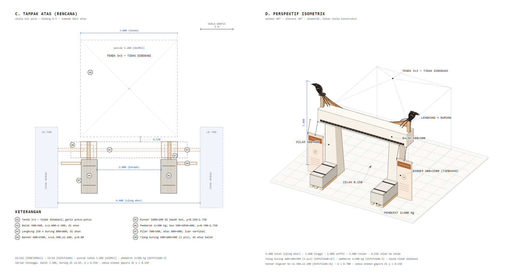
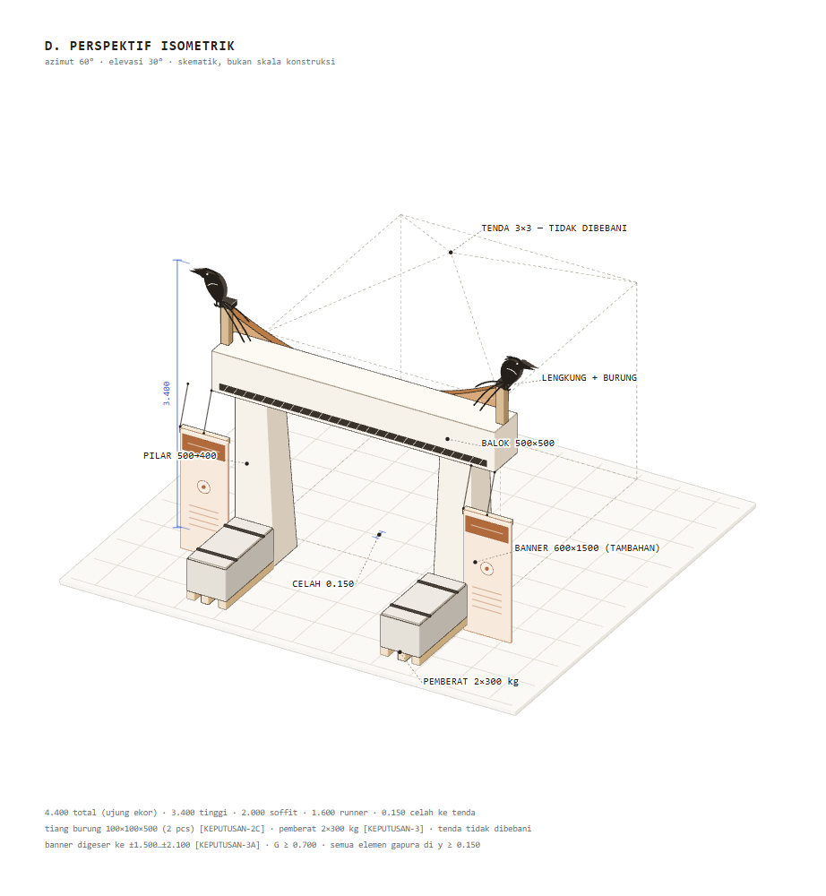
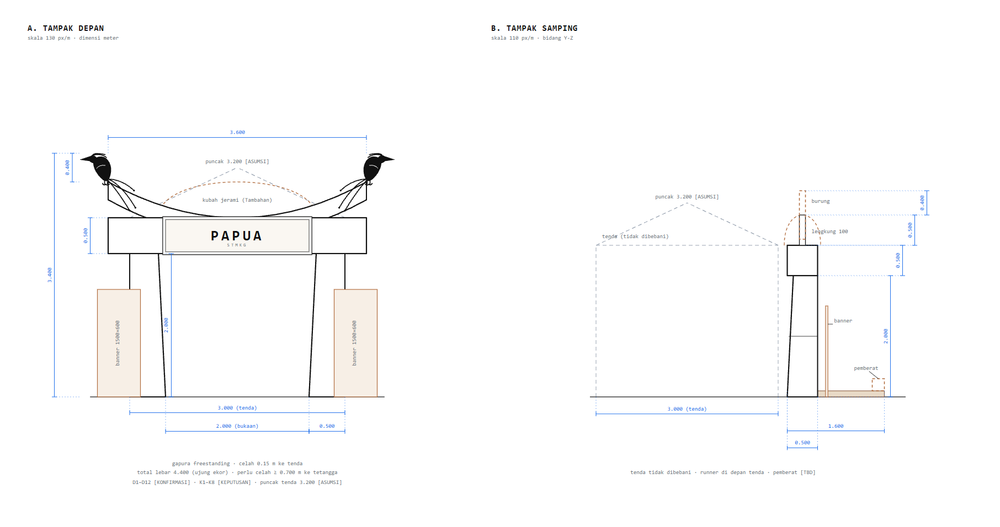
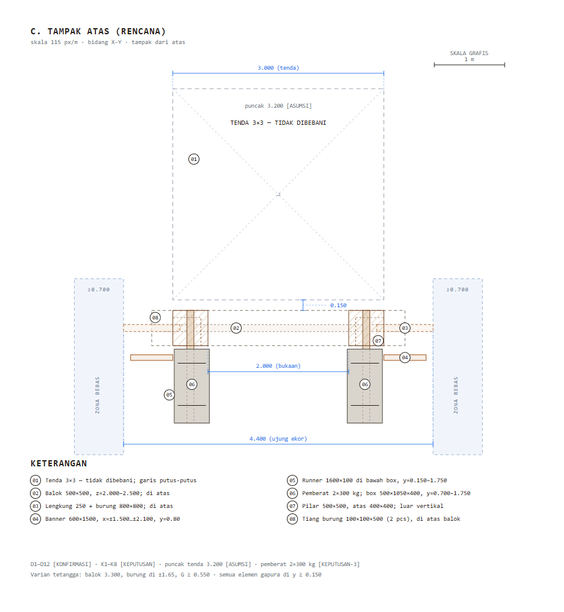
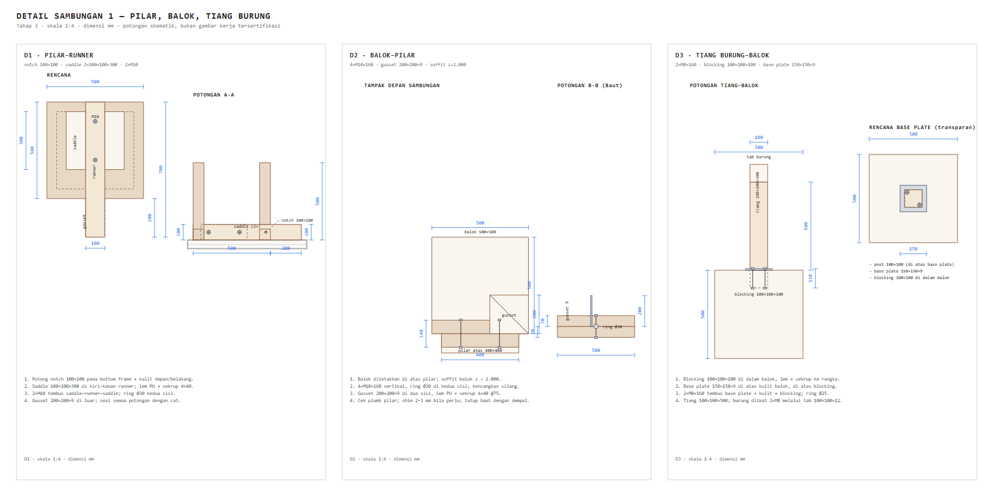
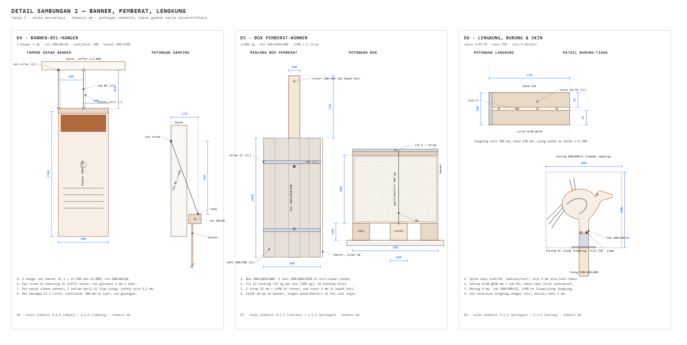
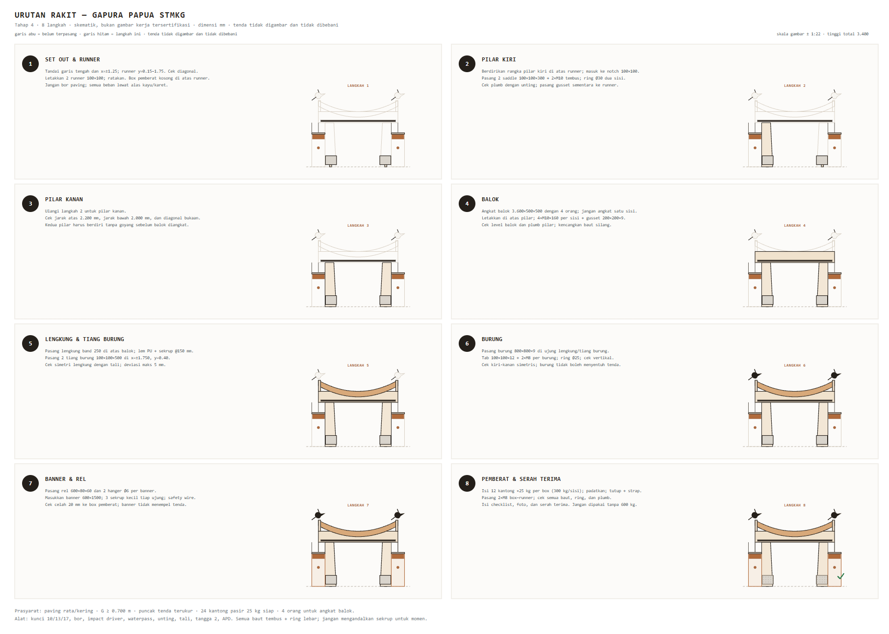

C + D · Rencana & Perspektif Isometrik (Revisi 3)
Gabungan Tampak Atas dan Perspektif Isometrik lengkap dengan box pemberat 2×300 kg dan banner x = ±1.500…±2.100.

Gabungan Tampak Atas dan Perspektif Isometrik lengkap dengan box pemberat 2×300 kg dan banner x = ±1.500…±2.100.

Pandangan isometrik 3D skematik untuk posisi balok, pilar, lengkung, burung, banner, runner, dan celah 0,15 m ke tenda.

Elevasi depan (bentang 3,6 m, tinggi 3,4 m, bukaan 2,0 m) dan potongan samping Y-Z di depan tenda 3×3 m.

Tata letak denah gapura, zona bebas tetangga ≥ 0,70 m, runner, box pemberat, dan jarak aman 0,15 m ke tenda.

| id | element | description | x_m | y_m | z_m | label |
|---|---|---|---|---|---|---|
| PL1 | pilar_kiri | base_outer_front_bottom | -1.500 | 0.650 | 0.000 | KONFIRMASI/K1 |
| PL2 | pilar_kiri | base_inner_front_bottom | -1.000 | 0.650 | 0.000 | KONFIRMASI/K1 |
| PL3 | pilar_kiri | base_inner_back_bottom | -1.000 | 0.150 | 0.000 | KONFIRMASI/K1 |
| PL4 | pilar_kiri | base_outer_back_bottom | -1.500 | 0.150 | 0.000 | KONFIRMASI/K1 |
| PL5 | pilar_kiri | top_outer_front | -1.500 | 0.650 | 2.000 | KEPUTUSAN/K2 |
| PL6 | pilar_kiri | top_inner_front | -1.100 | 0.650 | 2.000 | KEPUTUSAN/K2/D-C |
| PL7 | pilar_kiri | top_inner_back | -1.100 | 0.250 | 2.000 | KEPUTUSAN/K2/D-C |
| PL8 | pilar_kiri | top_outer_back | -1.500 | 0.250 | 2.000 | KEPUTUSAN/K2/D-C |
| PR1 | pilar_kanan | base_outer_front_bottom | 1.500 | 0.650 | 0.000 | KONFIRMASI/K1 |
| PR2 | pilar_kanan | base_inner_front_bottom | 1.000 | 0.650 | 0.000 | KONFIRMASI/K1 |
| PR3 | pilar_kanan | base_inner_back_bottom | 1.000 | 0.150 | 0.000 | KONFIRMASI/K1 |
| PR4 | pilar_kanan | base_outer_back_bottom | 1.500 | 0.150 | 0.000 | KONFIRMASI/K1 |
| PR5 | pilar_kanan | top_outer_front | 1.500 | 0.650 | 2.000 | KEPUTUSAN/K2 |
| PR6 | pilar_kanan | top_inner_front | 1.100 | 0.650 | 2.000 | KEPUTUSAN/K2/D-C |
| PR7 | pilar_kanan | top_inner_back | 1.100 | 0.250 | 2.000 | KEPUTUSAN/K2/D-C |
| PR8 | pilar_kanan | top_outer_back | 1.500 | 0.250 | 2.000 | KEPUTUSAN/K2/D-C |
| B1 | balok | bottom_front_left | -1.800 | 0.650 | 2.000 | KONFIRMASI/D1/D2 |
| B2 | balok | bottom_front_right | 1.800 | 0.650 | 2.000 | KONFIRMASI/D1/D2 |
| B3 | balok | bottom_back_left | -1.800 | 0.150 | 2.000 | KONFIRMASI/D1/D2 |
| B4 | balok | bottom_back_right | 1.800 | 0.150 | 2.000 | KONFIRMASI/D1/D2 |
| B5 | balok | top_front_left | -1.800 | 0.650 | 2.500 | KEPUTUSAN/K3 |
| B6 | balok | top_front_right | 1.800 | 0.650 | 2.500 | KEPUTUSAN/K3 |
| B7 | balok | top_back_left | -1.800 | 0.150 | 2.500 | KEPUTUSAN/K3 |
| B8 | balok | top_back_right | 1.800 | 0.150 | 2.500 | KEPUTUSAN/K3 |
| PN1 | panel_nama | bottom_left | -1.000 | 0.650 | 2.025 | KEPUTUSAN |
| PN2 | panel_nama | bottom_right | 1.000 | 0.650 | 2.025 | KEPUTUSAN |
| PN3 | panel_nama | top_right | 1.000 | 0.650 | 2.475 | KEPUTUSAN |
| PN4 | panel_nama | top_left | -1.000 | 0.650 | 2.475 | KEPUTUSAN |
| A0 | lengkung | center_top | 0.000 | 0.400 | 2.500 | TAFSIR/D4 |
| AL | lengkung | left_end_top | -1.800 | 0.400 | 3.000 | TAFSIR/D4 |
| AR | lengkung | right_end_top | 1.800 | 0.400 | 3.000 | TAFSIR/D4 |
| A0B | lengkung | center_bottom | 0.000 | 0.400 | 2.250 | KEPUTUSAN |
| ALB | lengkung | left_end_bottom | -1.800 | 0.400 | 2.750 | KEPUTUSAN |
| ARB | lengkung | right_end_bottom | 1.800 | 0.400 | 2.750 | KEPUTUSAN |
| BLMIN | burung_kiri | bbox_min | -2.200 | 0.350 | 2.600 | KEPUTUSAN/TAFSIR |
| BLMAX | burung_kiri | bbox_max | -1.400 | 0.450 | 3.400 | KEPUTUSAN/TAFSIR |
| BRMIN | burung_kanan | bbox_min | 1.400 | 0.350 | 2.600 | KEPUTUSAN/TAFSIR |
| BRMAX | burung_kanan | bbox_max | 2.200 | 0.450 | 3.400 | KEPUTUSAN/TAFSIR |
| BLP | burung_kiri | perch | -1.800 | 0.400 | 3.000 | KONFIRMASI/D9 |
| BRP | burung_kanan | perch | 1.800 | 0.400 | 3.000 | KONFIRMASI/D9 |
| SD1 | kubah_jerami | base_front_left | -1.100 | 0.700 | 2.500 | TAMBAHAN |
| SD2 | kubah_jerami | base_front_right | 1.100 | 0.700 | 2.500 | TAMBAHAN |
| SD3 | kubah_jerami | base_back_right | 1.100 | 0.100 | 2.500 | TAMBAHAN |
| SD4 | kubah_jerami | base_back_left | -1.100 | 0.100 | 2.500 | TAMBAHAN |
| SD5 | kubah_jerami | top | 0.000 | 0.400 | 3.000 | TAMBAHAN |
| BNL1 | banner_kiri | panel_bottom_inner | -1.350 | 0.800 | 0.000 | KONFIRMASI/D10 |
| BNL2 | banner_kiri | panel_bottom_outer | -1.950 | 0.800 | 0.000 | KONFIRMASI/D10 |
| BNL3 | banner_kiri | panel_top_outer | -1.950 | 0.800 | 1.500 | KONFIRMASI/D10 |
| BNL4 | banner_kiri | panel_top_inner | -1.350 | 0.800 | 1.500 | KONFIRMASI/D10 |
| BNR1 | banner_kanan | panel_bottom_inner | 1.350 | 0.800 | 0.000 | KONFIRMASI/D10 |
| BNR2 | banner_kanan | panel_bottom_outer | 1.950 | 0.800 | 0.000 | KONFIRMASI/D10 |
| BNR3 | banner_kanan | panel_top_outer | 1.950 | 0.800 | 1.500 | KONFIRMASI/D10 |
| BNR4 | banner_kanan | panel_top_inner | 1.350 | 0.800 | 1.500 | KONFIRMASI/D10 |
| ORL | outrigger_kiri | runner_min | -1.300 | 0.150 | 0.000 | KEPUTUSAN/KOREKSI-2B |
| ORL2 | outrigger_kiri | runner_max | -1.200 | 1.750 | 0.100 | KEPUTUSAN/KOREKSI-2B |
| ORR | outrigger_kanan | runner_min | 1.200 | 0.150 | 0.000 | KEPUTUSAN/KOREKSI-2B |
| ORR2 | outrigger_kanan | runner_max | 1.300 | 1.750 | 0.100 | KEPUTUSAN/KOREKSI-2B |
| BD1 | backdrop | panel_bottom_left | -1.200 | -2.700 | 0.000 | TAMBAHAN |
| BD2 | backdrop | panel_bottom_right | 1.200 | -2.700 | 0.000 | TAMBAHAN |
| BD3 | backdrop | panel_top_right | 1.200 | -2.700 | 2.000 | TAMBAHAN |
| BD4 | backdrop | panel_top_left | -1.200 | -2.700 | 2.000 | TAMBAHAN |
| T1 | tenda | front_left_bottom | -1.500 | 0.000 | 0.000 | KONFIRMASI/D5 |
| T2 | tenda | front_right_bottom | 1.500 | 0.000 | 0.000 | KONFIRMASI/D5 |
| T3 | tenda | back_right_bottom | 1.500 | -3.000 | 0.000 | KONFIRMASI/D5 |
| T4 | tenda | back_left_bottom | -1.500 | -3.000 | 0.000 | KONFIRMASI/D5 |
| T5 | tenda | peak | 0.000 | -1.500 | 3.200 | ASUMSI/TBD |
| BP1 | tiang_burung_kiri | post_bottom | -1.750 | 0.400 | 2.500 | KEPUTUSAN-2C |
| BP2 | tiang_burung_kiri | post_top | -1.750 | 0.400 | 3.000 | KEPUTUSAN-2C |
| BP3 | tiang_burung_kanan | post_bottom | 1.750 | 0.400 | 2.500 | KEPUTUSAN-2C |
| BP4 | tiang_burung_kanan | post_top | 1.750 | 0.400 | 3.000 | KEPUTUSAN-2C |
| BRL1 | banner_kiri | rail_bottom_inner | -1.350 | 0.800 | 1.480 | KEPUTUSAN-2C |
| BRL2 | banner_kiri | rail_bottom_outer | -1.950 | 0.800 | 1.480 | KEPUTUSAN-2C |
| BRL3 | banner_kiri | rail_top_outer | -1.950 | 0.800 | 1.540 | KEPUTUSAN-2C |
| BRL4 | banner_kiri | rail_top_inner | -1.350 | 0.800 | 1.540 | KEPUTUSAN-2C |
| BRR1 | banner_kanan | rail_bottom_inner | 1.350 | 0.800 | 1.480 | KEPUTUSAN-2C |
| BRR2 | banner_kanan | rail_bottom_outer | 1.950 | 0.800 | 1.480 | KEPUTUSAN-2C |
| BRR3 | banner_kanan | rail_top_outer | 1.950 | 0.800 | 1.540 | KEPUTUSAN-2C |
| BRR4 | banner_kanan | rail_top_inner | 1.350 | 0.800 | 1.540 | KEPUTUSAN-2C |
| BHL1 | banner_kiri | hanger_outer_top | -1.800 | 0.650 | 2.000 | KEPUTUSAN-2C |
| BHL2 | banner_kiri | hanger_outer_bottom | -1.800 | 0.820 | 1.540 | KEPUTUSAN-2C |
| BHL3 | banner_kiri | hanger_inner_top | -1.500 | 0.650 | 2.000 | KEPUTUSAN-2C |
| BHL4 | banner_kiri | hanger_inner_bottom | -1.500 | 0.820 | 1.540 | KEPUTUSAN-2C |
| BHR1 | banner_kanan | hanger_inner_top | 1.500 | 0.650 | 2.000 | KEPUTUSAN-2C |
| BHR2 | banner_kanan | hanger_inner_bottom | 1.500 | 0.820 | 1.540 | KEPUTUSAN-2C |
| BHR3 | banner_kanan | hanger_outer_top | 1.800 | 0.650 | 2.000 | KEPUTUSAN-2C |
| BHR4 | banner_kanan | hanger_outer_bottom | 1.800 | 0.820 | 1.540 | KEPUTUSAN-2C |
| WS1 | strip_peringatan | left_bottom | -1.700 | 0.652 | 2.040 | KEPUTUSAN-2C |
| WS2 | strip_peringatan | right_bottom | 1.700 | 0.652 | 2.040 | KEPUTUSAN-2C |
| WS3 | strip_peringatan | right_top | 1.700 | 0.652 | 2.120 | KEPUTUSAN-2C |
| WS4 | strip_peringatan | left_top | -1.700 | 0.652 | 2.120 | KEPUTUSAN-2C |
| PB1 | pemberat_kiri | block_min | -1.350 | 1.550 | 0.100 | TBD/KEPUTUSAN-2C |
| PB2 | pemberat_kiri | block_max | -1.150 | 1.750 | 0.300 | TBD/KEPUTUSAN-2C |
| PB3 | pemberat_kanan | block_min | 1.150 | 1.550 | 0.100 | TBD/KEPUTUSAN-2C |
| PB4 | pemberat_kanan | block_max | 1.350 | 1.750 | 0.300 | TBD/KEPUTUSAN-2C |
D1 Pilar–Runner (notch + saddle + 2×M10), D2 Balok–Pilar (4×M10 + gusset), D3 Tiang Burung–Balok.

D4 Banner–Rel–Hanger (2 rod Ø6 + safety wire), D5 Box Pemberat 2×300 kg, D6 Potongan Lengkung & Burung.

Proyek: Gapura Papua STMKG, freestanding di depan tenda 3×3 m Status: perhitungan pendahuluan untuk desain, bukan sertifikasi struktur Revisi: 3 — 27 November 2026 Dasar geometri: Tahap 2C + revisi 3A/3B (banner digeser keluar, pemberat menjadi box)
Dokumen ini memeriksa:
Yang tidak termasuk: analisis dinamis, sambungan las, pondasi, uji tarik material, dan verifikasi lapangan. Semua angka adalah estimasi konservatif dengan asumsi yang ditandai. Struktur belum boleh disebut "aman" sebelum diperiksa insinyur berwenang dan diuji coba di lokasi.
| Elemen | Dimensi | Posisi | Label |
|---|---|---|---|
| Balok | 3.600 × 500 × 500 mm | z = 2.000–2.500; y = 0.150–0.650 | K2/K3 |
| Pilar | 500×500 → 400×400 mm, h = 2.000 | x = ±1.000…±1.500; y = 0.150–0.650 | K1/K2 |
| Bukaan | 2.000 m bawah; 2.200 m atas | — | K2 |
| Lengkung | band 250 mm; naik 500 mm | y = 0.350–0.450; z = 2.500–3.000 | D4 |
| Burung | 800 × 800 × 100 mm | x = ±1.400…±2.200; z = 2.600–3.400 | D9 |
| Tiang burung | 100 × 100 × 500 mm | x = ±1.750; y = 0.400; z = 2.500–3.000 | KEPUTUSAN-2C |
| Banner | 600 × 1500 mm | x = ±1.500…±2.100; y = 0.800; z = 0–1.500 | KEPUTUSAN-3A |
| Rel banner | 600 × 80 × 60 mm | x = ±1.500…±2.100; y = 0.760–0.840; z = 1.480–1.540 | KEPUTUSAN-2C/3A |
| Runner | 1.600 × 100 × 100 mm | x = ±1.200…±1.300; y = 0.150–1.750 | KOREKSI-2B |
| Box pemberat | 500 × 1.050 × 400 mm | x = ±0.980…±1.480; y = 0.700–1.750; z = 0.100–0.500 | KEPUTUSAN-3B |
| Tenda | 3.000 × 3.000 mm; puncak 3.200 | y = −3.000…0 | D5/ASUMSI |
Revisi 3A: banner digeser 150 mm keluar (dari x = ±1.350…±1.950 menjadi ±1.500…±2.100) agar tidak bertabrakan dengan box pemberat. Lebar dan tinggi banner tidak berubah. Hanger dipindah ke x = ±1.500 dan ±1.800; rel menumpu di dua titik dengan kantilever 300 mm ke luar.
Revisi 3B: pemberat berubah dari blok 200×200×200 mm (placeholder 2C) menjadi box 500×1.050×400 mm per sisi, berisi 300 kg pasir/kerikil. Box duduk di atas runner dan dua kaki kayu, di depan pilar, dengan celah 20 mm ke banner.
| Material | Asumsi | Label |
|---|---|---|
| Kayu | 45 × 70 mm, E = 10.000 MPa, izin lentur 8 MPa, izin tekan 10 MPa | [ASUMSI] |
| Plywood | 9 mm, E = 6.000 MPa, izin lentur 12 MPa | [ASUMSI] |
| Baut M10 4.6 | tarik 12 kN; geser 16 kN; faktor sambungan kayu 0.5 | [ASUMSI] |
| Baut M8 4.6 | tarik 7 kN; geser 9 kN; faktor sambungan kayu 0.5 | [ASUMSI] |
| Pasir/kerikil | 1.600 kg/m³ (kering, padat) | [ASUMSI] |
| Paving | daya dukung izin 100 kPa | [ASUMSI] |
| Beban angin | v = 20 m/s; Cp = 1.3 | [ASUMSI] |
| Komponen | Massa | Berat |
|---|---|---|
| Superstruktur (kayu, plywood, lengkung, burung, banner, alat) | 180 kg | 1,77 kN |
| Isi pemberat 2 × 300 kg | 600 kg | 5,89 kN |
| Box + kaki + lid (2 box) | ≈ 30 kg | 0,29 kN |
| Total | 810 kg | 7,95 kN |
Untuk perhitungan guling, berat box (30 kg) diabaikan sehingga hasilnya konservatif. Pusat massa superstruktur diasumsikan di y = 0,42 m. Pusat massa isi pemberat di y = 1,225 m (box y = 0,700–1,750).
Kecepatan rencana operasi:
v = 20 m/s
q = 0,5 × ρ × v² = 0,5 × 1,225 × 20² = 245 Pa
p = Cp × q = 1,3 × 245 = 318,5 Pa ≈ 320 PaCp = 1,3 mencakup bentuk persegi dan gust sedang. [ASUMSI]
Luas proyeksi dan porositas:
| Komponen | A bruto (m²) | Porositas | A efektif (m²) | z pusat (m) |
|---|---|---|---|---|
| Balok | 1,80 | 1,00 | 1,80 | 2,25 |
| Pilar (2) | 2,00 | 1,00 | 2,00 | 1,00 |
| Lengkung terekspos | 0,60 | 1,00 | 0,60 | 2,70 |
| Burung (2) | 1,28 | 0,50 | 0,64 | 3,00 |
| Banner (2) | 1,80 | 0,50 | 0,90 | 0,75 |
| Tiang burung (2) | 0,10 | 1,00 | 0,10 | 2,75 |
| Box pemberat (2) | 0,40 | 1,00 | 0,40 | 0,30 |
| Total | 7,98 | — | 6,44 | — |
A_eff = 6,44 m²
z_c = Σ(A_i × z_i) / ΣA_i = 1,65 m
F_w = p × A_eff = 320 × 6,44 = 2,061 kN
M_w = F_w × z_c = 2,061 × 1,65 = 3,40 kN·mDua pivot diperiksa:
M_penahan = W_s × (0,42 − 0,15) + W_b × (1,225 − 0,15)
= 1,77 × 0,27 + 5,89 × 1,075
= 0,478 + 6,332 = 6,810 kN·m
FOS_A = 6,810 / 3,40 = 2,00M_penahan = W_s × (1,75 − 0,42) + W_b × (1,75 − 1,225)
= 1,77 × 1,33 + 5,89 × 0,525
= 2,354 + 3,092 = 5,446 kN·m
FOS_B = 5,446 / 3,40 = 1,60Kedua FOS ≥ 1,5. Dengan 600 kg pemberat, batas operasi 20 m/s tercapai. FOS minimum adalah 1,60 pada angin dari belakang.
FOS_A = 0,478 / 3,40 = 0,14
FOS_B = 2,354 / 3,40 = 0,69Gapura tidak boleh berdiri tanpa pemberat. Ini batas mutlak, bukan saran.
M_A = 0,478 + 1,47 × 1,075 = 2,058 kN·m → FOS_A = 0,61
M_B = 2,354 + 1,47 × 0,525 = 3,126 kN·m → FOS_B = 0,92Gagal. 600 kg adalah minimum desain. Dengan 650 kg total, FOS_B ≈ 1,68; dengan 700 kg, FOS_B ≈ 1,76.
| Kondisi | FOS_A | FOS_B | Status |
|---|---|---|---|
| Tanpa pemberat | 0,14 | 0,69 | tidak boleh |
| 300 kg total | 0,61 | 0,92 | gagal |
| 600 kg total | 2,00 | 1,60 | minimum desain |
| 650 kg total | 2,16 | 1,68 | disarankan jika ruang izin |
R = μ × W_total = 0,50 × 7,66 = 3,83 kN
FOS_geser = 3,83 / 2,061 = 1,86Dengan paving basah μ = 0,35:
R = 2,68 kN; FOS = 1,30Syarat: hanya dipasang di paving kering; tambahkan pad karet 6 mm di bawah kaki box pemberat dan alas pilar. Jika hujan lebat/paving basah, operasi dihentikan.
A_tumpuan = 2 × (0,50 × 0,50) + 4 × (0,10 × 1,05)
= 0,50 + 0,42 = 0,92 m²
p_rata = 7,66 / 0,92 = 8,3 kPa
p_max_kaki_box = 1,47 / 0,105 = 14,0 kPa
p_max_pilar = 0,90 / 0,25 = 3,6 kPaSemua jauh di bawah 100 kPa. Bearing bukan penentu; yang kritis adalah guling dan geser. Paving harus rata dan tidak berlubang; gunakan alas plywood 12 mm di bawah kaki box untuk menyebar beban.
Bentang bersih antar pilar atas = 2,20 m. Beban angin balok:
w = 1,80 × 320 / 3,60 = 160 N/m
M = w L² / 8 = 160 × 2,20² / 8 = 96,8 N·mSection box 500×500 dengan plywood 9 mm dan 4 flange kayu 45×70:
I ≈ 1,31 × 10⁻³ m⁴
S = I / 0,25 = 5,24 × 10⁻³ m³
σ = M / S = 96,8 / 5,24e-3 = 18,5 kPa = 0,019 MPa
δ = 5 w L⁴ / (384 E I) = 0,004 mmTegangan dan defleksi sangat kecil. Balok tidak kritis untuk lentur; yang kritis adalah sambungan dan guling. Kantilever 0,70 m di ujung balok juga kecil: M = 160 × 0,70² / 2 = 39 N·m.
Beban aksial per pilar ≈ 0,90 kN. Luas kayu 4 × 45 × 70 = 12.600 mm²:
σ_aksial = 900 / 12.600 = 0,071 MPaMomen angin per pilar (A = 1,0 m², resultan di z = 1,0 m):
M_p = 320 × 1,0 = 320 N·m
I_4post ≈ 5,82 × 10⁸ mm⁴; S ≈ 2,33 × 10⁶ mm³
σ_lentur = 320.000 / 2,33e6 = 0,137 MPa
σ_total = 0,071 + 0,137 = 0,208 MPa << 8 MPaPilar 500×500 dengan 4 post 45×70 tidak kritis terhadap tekan/lentur; stabilitas global yang menentukan.
Lengkung adalah band 250 mm dari kayu laminasi/kerf + skin. Beban angin 0,6 m² × 320 = 192 N, ditahan oleh dua ujung di atas balok. Burung 800×800×100 mm dari plywood 9 mm; berat ≈ 4 kg/burung; angin 0,32 m² efektif × 320 = 102 N per burung. Tiang burung 100×100×500 menahan momen 102 × 0,4 = 41 N·m; section modulus 100×100²/6 = 1,67e5 mm³; σ = 0,25 MPa. Aman.
| Sambungan | Gaya desain | Alat | Cek |
|---|---|---|---|
| Balok–pilar | V = 0,97 kN; M = 0,48 kN·m | 4 × M10 + gusset plywood 9 mm 200×200, dua sisi | T tarik 1,6 kN/baut; izin 6 kN → FOS 3,7 |
| Pilar–runner | Uplift 0,72 kN; geser 0,97 kN | notch 100×100 + 2 saddle block 100×100×300 + 2 × M10 tembus + 2 gusset 200×200×9 | Geser 0,49 kN/baut; izin 8 kN → FOS 16 |
| Tiang burung–balok | V = 0,20 kN; M = 0,10 kN·m | 2 × M8 × 160 + blocking 100×100×100 dalam balok + base plate 150×150×9 | 1,0 kN/baut; izin 4 kN → FOS 4 |
| Banner–rel | 0,14 kN/hanger | 2 × rod 6 mm + eye screw + hook + safety wire | izin 2 kN → FOS 14 |
| Box pemberat–runner | 0,97 kN/box | 2 × M8 + 2 strap 25 mm | gesekan + baut |
| Skin plywood–rangka | 7,2 N/sekrup | sekrup 4×40 @150 mm + PU | pull-through > 200 N |
Catatan: semua baut harus tembus dengan ring lebar (Ø ≥ 30 mm) di kedua sisi kayu. Gusset plywood dipasang bolak-balik dengan lem PU + sekrup. Jangan mengandalkan sekrup saja untuk menahan momen.
Setiap sisi:
Box: 500 (x) × 1.050 (y) × 400 (z) mm
Isi: 300 kg pasir/kerikil = 0,1875 m³ (89% dari volume box 0,21 m³)
Kantong: 12 × 25 kg per box; 24 kantong total
Posisi: x = ±0,980…±1,480; y = 0,700–1,750; z = 0,100–0,500Konstruksi:
Fungsi ganda: pemberat + planter/bench rendah. Jangan duduk/berdiri di atas box saat angin kencang.
| Kondisi | Tindakan |
|---|---|
| v ≤ 20 m/s (72 km/h) | boleh berdiri dengan 600 kg pemberat, banner terpasang |
| 20 < v ≤ 25 m/s | lepas banner (mengurangi 0,90 m²), tambah 4 kantong per sisi, atau bongkar |
| v > 25 m/s atau badai | bongkar/lipat gapura; jangan andalkan pemberat |
| Paving basah/licin | hentikan operasi; pasang pad karet; keringkan |
| Setelah hujan/angin | periksa baut, strap, box, banner, dan plumb |
Rencana bongkar:
Perhitungan ini mengasumsikan box plywood dengan rangka kayu. Dengan material awal 2 lembar plywood 9 mm + 8 balok 4 m, cakupan tidak cukup untuk versi kulit penuh. Ada dua jalur:
| Kebutuhan plywood tampak | Luas |
|---|---|
| Kulit depan balok | 1,80 m² |
| Kulit bawah balok (soffit) | 1,80 m² |
| Kulit depan pilar (2) | 2,00 m² |
| Burung (2, 800×800) | 1,28 m² |
| Lengkung + gusset + cadangan | 0,60 m² |
| Total | 7,48 m² |
| 2 lembar existing (1220×2440) | 5,95 m² |
| Kekurangan | 1,53 m² |
Cukup dengan 1 lembar tambahan (2,98 m²), total 3 lembar, sisa ≈ 1,45 m² untuk lid box/cadangan. Box pemberat memakai kayu reklaim/OSB, bukan jatah plywood ini.
| Kebutuhan | Luas |
|---|---|
| Kulit depan balok | 1,80 m² |
| Kulit depan pilar (2) | 2,00 m² |
| Burung 600×600 (2) | 0,72 m² |
| Gusset + cadangan | 0,50 m² |
| Total | 5,02 m² |
Soffit balok memakai kain tebal dicat, lengkung memakai kain, banner memakai flexi/banner cloth, box pemberat memakai kayu reklaim. Sisa ≈ 0,93 m². Konsekuensi: kekakuan balok sedikit turun, burung lebih kecil (total lebar 4,0 m; G ≥ 0,50 m), dan soffit kain perlu dirawat. Stabilitas global tidak berubah karena ditentukan pemberat.
| Kebutuhan kayu | Estimasi |
|---|---|
| 8 post pilar 2,0 m | 16,0 m |
| 4 rail balok 3,6 m | 14,4 m |
| Subtotal rangka utama | 30,4 m |
| Rusuk/bracing/arch spine/runner/banner rail/saddle block | ≈ 20–24 m |
| Total | 50–54 m (13–14 balok 4 m) |
8 balok existing = 32 m; perlu 5–6 balok tambahan atau kayu reklaim untuk runner, arch spine, bracing, dan saddle block. Prioritaskan pembelian untuk bagian struktural (runner, arch spine); bagian tersembunyi boleh reklaim.
Tahap pemasangan dari setting out & runner hingga pengisian 24 kantong pasir (600 kg) dan serah terima.

Proyek: Gapura Papua STMKG, freestanding di depan tenda 3×3 m Status: panduan fabrikasi dan rakit, bukan gambar kerja tersertifikasi Revisi: 1 — 27 November 2026 Dasar: Tahap 2C (geometri) + Tahap 3 (struktur, rev 3) + KEPUTUSAN-3A…3G Gambar pendamping: urutan-rakit.png (8 langkah), ../03-struktur/detail-1.png, ../03-struktur/detail-2.png
Pekerjaan ini boleh dimulai hanya jika:
[ASUMSI].[KONFIRMASI].[ASUMSI] sampai diukur.Dokumen ini tidak menggantikan pemeriksaan insinyur berwenang. Semua sambungan dan pemberat harus dicek di lokasi sebelum dipakai publik.
| Item | Nilai | Label |
|---|---|---|
| Lebar total gapura (ujung ekor) | 4.400 mm | [KEPUTUSAN] |
| Tinggi total | 3.400 mm | [KEPUTUSAN] |
| Soffit balok | z = 2.000 mm | [KEPUTUSAN-K2] |
| Balok | 3.600 × 500 × 500 mm | [KEPUTUSAN-K2] |
| Pilar | 500×500 → 400×400 mm, h = 2.000 mm | [KEPUTUSAN-K1/K2] |
| Bukaan bawah / atas | 2.000 / 2.200 mm | [KEPUTUSAN-K2] |
| Runner | 1.600 × 100 × 100 mm, y = 0.150–1.750 | [KOREKSI-2B] |
| Box pemberat | 500 × 1.050 × 400 mm, 2 × 300 kg | [KEPUTUSAN-3B] |
| Banner | 600 × 1.500 mm, x = ±1.500…±2.100 | [KEPUTUSAN-3A] |
| Rel banner | 600 × 80 × 60 mm | [KEPUTUSAN-2C/3A] |
| Jarak ke tenda | 150 mm (y = 0.150) | [KONFIRMASI] |
| Batas angin operasi | 20 m/s | [ASUMSI] |
| Pemberat minimum | 600 kg total | [KEPUTUSAN-3B] |
Section kayu aktual harus dicek; tabel memakai 45×70 mm [ASUMSI]. Jika section berbeda, perbarui panjang dan perhitungan.
| No | Komponen | Potongan (mm) | Qty | Total (m) | Catatan |
|---|---|---|---|---|---|
| 1 | Post pilar | 2.000 | 8 | 16.0 | 4 post per pilar |
| 2 | Rail bawah pilar | 500 | 8 | 4.0 | 2 pilar × 4 sisi |
| 3 | Rail atas pilar | 400 | 8 | 3.2 | 2 pilar × 4 sisi |
| 4 | Rail tengah/bracing pilar | 800 | 4 | 3.2 | 2 per pilar |
| 5 | Rail balok memanjang | 3.600 | 4 | 14.4 | 4 sisi balok |
| 6 | Vertikal/blocking balok | 500 | 4 | 2.0 | @ ±1.200 dan ±1.750 |
| 7 | Spine lengkung | 3.700 | 2 | 7.4 | kerf/laminasi; panjang developed |
| 8 | Rusuk lengkung | 300 | 4 | 1.2 | penopang band |
| 9 | Gusset/cleat | 200 | 10 | 2.0 | dari offcut |
| Total | 53.4 m | ≈ 13–14 balok 4 m |
Cek material:
8 balok existing × 4.0 m = 32.0 m
Kebutuhan tambahan = 53.4 − 32.0 = 21.4 m
Jumlah balok 4 m tambahan = 21.4 / 4 = 5.35 → 6 balok (atau reklaim)Sisa potongan disimpan untuk shim, cleat, dan perbaikan.
| Komponen | Potongan (mm) | Qty | Total (m) | Catatan |
|---|---|---|---|---|
| Runner | 1.600 | 2 | 3.2 | bisa 100×100 solid atau laminasi |
| Saddle block | 300 | 4 | 1.2 | 2 per pilar |
| Tiang burung | 500 | 2 | 1.0 | x = ±1.750 |
| Blocking dalam balok | 100 | 2 | 0.2 | di x = ±1.750 |
| Total | 5.6 m | stok/reklaim terpisah |
Jika 100×100 tidak tersedia, laminasi 2 × 45×70 dengan lem PU + sekrup; kebutuhan kayu 45×70 menjadi 11.2 m tambahan. Jangan memakai potongan yang berlubang besar atau retak.
| Komponen | Potongan (mm) | Qty | Total (m) |
|---|---|---|---|
| Rel banner | 600 | 2 | 1.2 |
Bisa juga di-rip dari kayu 45×70 yang dilaminasi menjadi 80×60; label [ASUMSI] jika section berbeda.
| No | Komponen | Ukuran (mm) | Luas (m²) | Catatan |
|---|---|---|---|---|
| 1 | Kulit depan balok | 3.600 × 500 | 1.80 | 1 lembar utuh |
| 2 | Kulit soffit balok | 3.600 × 500 | 1.80 | sambung bila perlu |
| 3 | Kulit depan pilar | 2.000 × 500 | 2.00 | 2 pilar |
| 4 | Burung | 800 × 800 | 1.28 | 2 pcs |
| 5 | Lengkung, gusset, cadangan | — | 0.60 | termasuk 8 gusset 200×200 |
| Total | 7.48 m² |
Cek lembar:
1 lembar 1.220 × 2.440 = 2.977 m²
3 lembar = 8.931 m²
Sisa = 8.931 − 7.48 = 1.45 m²Keputusan: 3 lembar (2 existing + 1 tambahan) [KEPUTUSAN]. Box pemberat memakai OSB/kayu reklaim, bukan jatah plywood ini. Jika hanya 2 lembar, pakai versi hemat (soffit kain, burung 600×600) seperti laporan struktur §10.2.
| Item | Spesifikasi | Qty | Catatan |
|---|---|---|---|
| Baut M10×160 | 4.6, ring lebar Ø30, mur | 14 | 8 balok–pilar + 4 pilar–runner + 2 cadangan |
| Baut M8×160 | 4.6, ring Ø25, mur | 14 | 4 tiang burung + 4 tab burung + 4 box + 2 cadangan |
| Sekrup kayu 4×40 | galvanis | 500 | skin, gusset, arch @150 |
| Sekrup kayu 5×80 | galvanis | 100 | rangka |
| Sekrup kayu 8×100 | galvanis | 50 | saddle/blocking |
| Lem PU | exterior | 2 kg | semua sambungan kayu |
| Sealant | exterior | 2 tube | celah skin |
| Eye screw | Ø6, 50 mm | 4 | soffit balok |
| Hook | Ø6 | 4 | rel banner |
| Rod galvanis | Ø6 × 500 | 4 | hanger |
| Safety wire | Ø1.5 | 4 m | banner |
| Strap ratchet | 25 mm | 4 | 2 per box |
| Kantong pasir | 25 kg | 24 | 600 kg total |
| Karet pad | 6 mm | 4 × (100×1.050) + 2 × (500×500) | bawah kaki box & pilar |
| Plywood pad | 12 mm | 2 × (550×1.100) | sebar beban di paving |
| Warning strip | 3.400 × 80 | 1 | reflektor/plywood dicat |
| Banner | 600 × 1.500 | 2 | flexi/kain |
| Cat kayu | sealer + exterior | 5 L + 5 L | 2 lapis |
| Amplas, kuas, kain | — | secukupnya |
Catatan banner: jika banner 1.500 mm menyentuh paving, lipat hem bawah 50 mm atau gunakan tinggi cetak 1.450 mm. Area angin berubah < 4%; stabilitas tetap ditentukan pemberat. [KEPUTUSAN-4A]
| Tahap | Orang | Waktu |
|---|---|---|
| Fabrikasi rangka + skin | 2–3 | 3–4 hari |
| Pra-rakit di halaman | 3–4 | 1 hari |
| Rakit di lokasi | 4 | 3–4 jam |
| Bongkar | 3–4 | 2 jam |
Waktu tidak termasuk pengeringan cat (24 jam) dan pengeringan lem (12 jam).
Rumus diagonal runner:
d = √(2.500² + 1.600²)
= √(6.250.000 + 2.560.000)
= √8.810.000
= 2.968 mmToleransi diagonal ±10 mm. Jika lebih, geser runner sebelum dipasang.
Cek bukaan pilar:
Diagonal bukaan (bawah 2.000, atas 2.200, tinggi 2.000):
d = √(2.100² + 2.000²) = √(4.410.000 + 4.000.000) = 2.900 mmKedua diagonal harus sama (±10 mm). Ini memastikan pilar tidak miring ke samping.
Lakukan sebelum hari-H, di permukaan rata:
Cek rangka pilar:
Diagonal alas 500×500 = √(500² + 500²) = 707 mm
Diagonal atas 400×400 = √(400² + 400²) = 566 mmCek rangka balok:
Diagonal = √(3.600² + 500²) = √(12.960.000 + 250.000) = 3.635 mmJangan mengisi pasir sebelum pilar dan balok terpasang; box berat sulit digeser.
Alternatif aman: pasang lengkung dan tiang burung ke balok di tanah, lalu angkat satu unit. Berat tambahan ≈ 8–10 kg; masih dapat diangkat 4 orang. Kurangi pekerjaan di tangga.
Cek pemberat:
12 kantong × 25 kg = 300 kg per box
2 box × 300 kg = 600 kg totalCek stabilitas (dari laporan struktur):
FOS_A = 2.00 (angin dari depan)
FOS_B = 1.60 (angin dari belakang)
Batas operasi v = 20 m/sJika angin >20 m/s: lepas banner, tambah 4 kantong per sisi, atau bongkar.
| Langkah | Yang dicek | Kriteria | Paraf |
|---|---|---|---|
| 1 | Level runner | ≤3 mm/m | |
| 1 | Jarak runner | 2.500 ±5 mm | |
| 1 | Diagonal runner | 2.968 ±10 mm | |
| 2 | Plumb pilar kiri | ≤5 mm/2 m | |
| 2 | Baut pilar–runner | 2×M10 kencang, ring lengkap | |
| 3 | Jarak dalam atas | 2.200 ±5 mm | |
| 3 | Jarak dalam bawah | 2.000 ±5 mm | |
| 3 | Diagonal bukaan | 2.900 ±10 mm, selisih ≤10 mm | |
| 4 | Level balok | ≤3 mm/3.6 m | |
| 4 | Baut balok–pilar | 8×M10 kencang | |
| 4 | Gusset | 2 sisi, lem + sekrup | |
| 5 | Rise lengkung | 500 ±10 mm | |
| 5 | Plumb tiang burung | ≤5 mm | |
| 6 | Simetri burung | selisih ≤10 mm | |
| 6 | Celah ke tenda | ≥150 mm | |
| 7 | Celah banner–box | 20 ±5 mm | |
| 7 | Safety wire | terpasang, tidak kendor | |
| 8 | Total pemberat | 600 kg | |
| 8 | Semua baut/strap | kencang, tidak ada yang hilang | |
| 8 | Dokumen | checklist + foto + tanda tangan |
| Risiko | Pengendalian |
|---|---|
| Angin >20 m/s | Pantau cuaca; lepas banner/tambah pemberat/bongkar |
| Paving basah/licin | Hentikan operasi; keringkan; pasang karet |
| Lifting manual | 4 orang; tekuk lutut; jangan angkat satu sisi |
| Kerja di tangga | 2 orang; tangga stabil; jangan menjangkau jauh |
| Baut/ring jatuh | Tool lanyard; helm; area steril |
| Pengunjung | Barikade; satu pintu masuk; awasi anak-anak |
| Plywood retak | Pilot hole; ring lebar; jangan over-torque |
| Banner lepas | Safety wire; sekrup ujung; cek setelah hujan |
[ASUMSI]; ukur material aktual sebelum potong.[ASUMSI]; ukur sebelum fabrikasi.[ASUMSI]; jika paving tipis/berlubang, tambah alas plywood 12 mm.| Kategori | Nama Dokumen / Visualisasi | Tipe | Jalur Akses |
|---|---|---|---|
| 05 · Interaktif (Anatomy) | Simulasi Stabilitas & Rakit (Terang) | HTML | docs/05-interaktif/stand-light.html ↗ |
| 05 · Interaktif (Anatomy) | Simulasi Stabilitas & Rakit (Gelap) | HTML | docs/05-interaktif/stand.html ↗ |
| 05 · Interaktif (Anatomy) | Script Builder Anatomy | MJS | docs/05-interaktif/build-stand.mjs ↗ |
| 02 · Geometri | Lembar Gabungan Tampak Atas + Isometrik | HTML | docs/02-geometri/top-iso.html ↗ |
| 02 · Geometri | Perspektif Isometrik | HTML | docs/02-geometri/iso.html ↗ |
| 02 · Geometri | Tampak Depan & Samping | HTML | docs/02-geometri/front-side.html ↗ |
| 02 · Geometri | Tampak Atas (Rencana) | HTML | docs/02-geometri/top.html ↗ |
| 02 · Geometri | Tabel Koordinat Geometri | CSV | docs/02-geometri/coordinates.csv ↗ |
| 03 · Struktur | Detail Sambungan 1 (Pilar, Balok, Tiang Burung) | HTML | docs/03-struktur/detail-1.html ↗ |
| 03 · Struktur | Detail Sambungan 2 (Banner, Pemberat, Lengkung) | HTML | docs/03-struktur/detail-2.html ↗ |
| 03 · Struktur | Laporan Perhitungan Struktur | MD | docs/03-struktur/laporan-struktur.md ↗ |
| 04 · Rakit | Diagram Urutan Rakit 8 Langkah | HTML | docs/04-rakit/urutan-rakit.html ↗ |
| 04 · Rakit | Panduan Rakit & Cutting List | MD | docs/04-rakit/urutan-rakit.md ↗ |